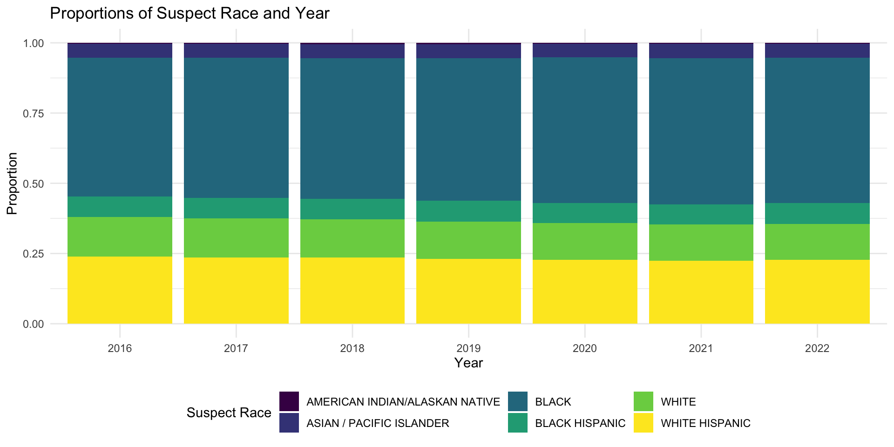
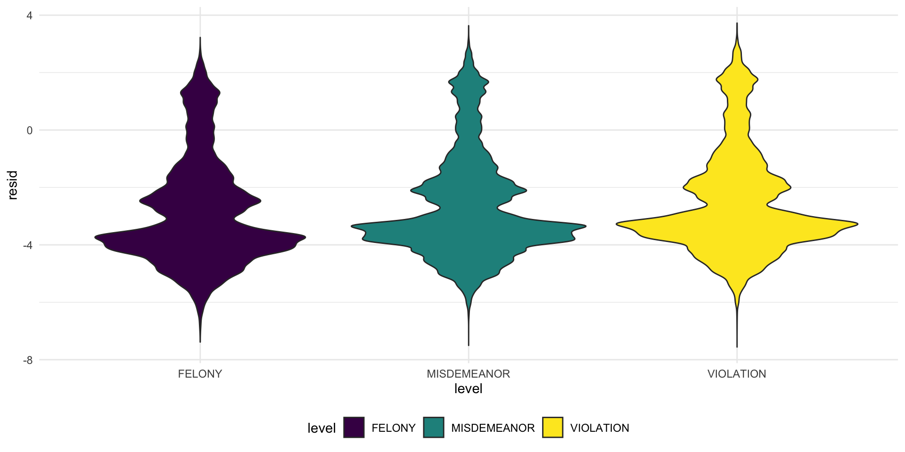

Suspect Analysis

In this section we would like to explore more about the crime
suspect’s features.
We mainly focus on studying the “Felony Crimes”, which includes:
“BURGLARY”, “FELONY ASSAULT”, “GRAND LARCENY”, “GRAND LARCENY OF MOTOR
VEHICLE”, “MURDER & NON-NEGL. MANSLAUGHTER”, “RAPE”, “ROBBERY” in
offense column based on the common definition and
reference.
Visual Analysis
We will first use data visualization to give an overview of the distribution of suspect’s features.
Suspect Sex Analysis
complaint %>%
drop_na(offense, susp_sex) %>%
group_by(year, susp_sex) %>%
dplyr::summarize(n_obs = n()) %>%
group_by(year) %>%
dplyr::summarize(susp_sex, percentage = n_obs / sum(n_obs)) %>%
ggplot(aes(x = year, y = percentage, fill = susp_sex)) +
geom_bar(stat = 'identity') +
labs(
x = "Year",
y = "Proportion",
title = "Proportions of Suspect Sex and Year",
fill = "Suspect Sex"
)
complaint %>%
drop_na(offense, susp_sex) %>%
group_by(level, susp_sex) %>%
dplyr::summarize(n_obs = n()) %>%
group_by(level) %>%
dplyr::summarize(susp_sex, percentage = n_obs / sum(n_obs)) %>%
ggplot(aes(x = level, y = percentage, fill = susp_sex)) +
geom_bar(stat = 'identity') +
labs(
x = "Level",
y = "Proportion",
title = "Proportions of Suspect Sex and Level",
fill = "Suspect Sex"
)According to the plot, most of the suspect’s sex(if recorded) is
male, female suspects appear to be much fewer than male suspect.
And in 2020, the propotions of male suspect are even larger than other
years. In the three kinds of crime level, male aslo has larger
proportion than female.
Suspect Race Analysis
complaint %>%
drop_na(offense, susp_race) %>%
group_by(year, susp_race) %>%
dplyr::summarize(n_obs = n()) %>%
group_by(year) %>%
dplyr::summarize(susp_race, percentage = n_obs / sum(n_obs)) %>%
ggplot(aes(x = year, y = percentage, fill = susp_race)) +
geom_bar(stat = 'identity') +
labs(
x = "Year",
y = "Proportion",
title = "Proportions of Suspect Race and Year",
fill = "Suspect Race"
)
complaint %>%
drop_na(offense, susp_race) %>%
group_by(level, susp_race) %>%
dplyr::summarize(n_obs = n()) %>%
group_by(level) %>%
dplyr::summarize(susp_race, percentage = n_obs / sum(n_obs)) %>%
ggplot(aes(x = level, y = percentage, fill = susp_race)) +
geom_bar(stat = 'identity') +
labs(
x = "Level",
y = "Proportion",
title = "Proportions of Suspect Race and Level",
fill = "Suspect Race"
)Based on barplot, we can see that the most frequent suspect races are: Black, White Hispanic and White, while Asian/Pacific Islander and American Indian/Alaskan Native are the least freqeut races to be a suspect. In the three kinds of crime level, black and white hispanic also take the largest proportion.
Suspect Age Group Analysis
complaint %>%
drop_na(offense, susp_age_group) %>%
group_by(year, susp_age_group) %>%
dplyr::summarize(n_obs = n()) %>%
group_by(year) %>%
dplyr::summarize(susp_age_group, percentage = n_obs / sum(n_obs)) %>%
ggplot(aes(x = year, y = percentage, fill = susp_age_group)) +
geom_bar(stat = 'identity') +
labs(
x = "Year",
y = "Proportion",
title = "Proportions of Suspect Age Group and Year",
fill = "Suspect Age Group"
)
complaint %>%
drop_na(offense, susp_age_group) %>%
group_by(level, susp_age_group) %>%
dplyr::summarize(n_obs = n()) %>%
group_by(level) %>%
dplyr::summarize(susp_age_group, percentage = n_obs / sum(n_obs)) %>%
ggplot(aes(x = level, y = percentage, fill = susp_age_group)) +
geom_bar(stat = 'identity') +
labs(
x = "Level",
y = "Proportion",
title = "Proportions of Suspect Age Group and Level",
fill = "Suspect Age Group"
)
According to the barplot, we can see that the age group between 25
and 44 years old takes up largest proportion in suspects, and the next
is 18-24 years old.
Besides, with time going by, the proportion of age group between 25-64
years old are rising in suspects’ age distribution.
Statistical Testing Analysis
We use statistical tests to find if there is a difference in daily crime records of suspects from difference races like Asian/Pacific Islander and White.
\(H_0\):The average number of daily crimes recorded by NYPD is equal for Asian/Pacific suspect and White suspect.
\(H_1\): The average number of daily crimes recorded by NYPD is not equal for Asian/Pacific suspect and White suspect.
Suspect Race Analysis
crimebyday_aspa = complaint %>%
group_by(year,month,day_of_week, susp_race) %>%
dplyr::summarize(
n_bydate = n(),
) %>%
unique()
crimebyday_white = complaint %>%
group_by(year,month,day_of_week) %>%
filter(susp_race == "WHITE") %>%
dplyr::summarize(
n_bydate = n(),
) %>%
unique()
t.test(crimebyday_aspa$n_bydate,crimebyday_white$n_bydate) %>% broom::tidy()## # A tibble: 1 × 10
## estimate estimate1 estimate2 statis…¹ p.value param…² conf.…³ conf.…⁴ method
## <dbl> <dbl> <dbl> <dbl> <dbl> <dbl> <dbl> <dbl> <chr>
## 1 371. 782. 412. 27.1 2.62e-149 4304. 344. 397. Welch…
## # … with 1 more variable: alternative <chr>, and abbreviated variable names
## # ¹statistic, ²parameter, ³conf.low, ⁴conf.highAccording to the test results, since the p-value is very small, we reject \(H_0\) and conclude that there’s a significant difference on daily crime numbers between those two suspect races.
Regression Modelling Analysis
In many circumstances, the NYPD is unclear about the suspect’s
features, thus make it more difficult to find the suspect. Here we are
interested in how suspect’s Sex and Race are related to other factors in
the dataset, and if we can predict the suspect’s feature based on other
information.
We build classification models to give prediction of the criminal’s
features based on other factors, and draw conclusions from the
coefficients of the factors.
Suspect Sex Prediction
tidydata1 = complaint %>%
select(-day_of_week) %>%
na.omit() %>%
mutate(susp_sex = ifelse(susp_sex == "M", 1, 0),
vic_sex = ifelse(vic_sex == "M", 1, 0),
jurisdiction_code = as.numeric(jurisdiction_code)) %>%
mutate(
jurisdiction_code = ifelse(jurisdiction_code >= 3, 3, jurisdiction_code)) %>%
mutate(jurisdiction_code = as.factor(jurisdiction_code))The logistic regression model to predict the suspect’s sex based on other factors.
mylogit <- glm(susp_sex ~
borough + jurisdiction_code
+ level + susp_age_group + susp_race + vic_age_group
+ vic_race + vic_sex, data = tidydata1, family = "binomial")
mylogit %>%
broom::tidy() %>%
select(term, estimate, p.value)## # A tibble: 28 × 3
## term estimate p.value
## <chr> <dbl> <dbl>
## 1 (Intercept) 1.59 1.09e-216
## 2 boroughBROOKLYN 0.0495 8.58e- 13
## 3 boroughMANHATTAN 0.0757 1.03e- 22
## 4 boroughQUEENS 0.0547 6.26e- 13
## 5 boroughSTATEN ISLAND -0.111 2.56e- 19
## 6 jurisdiction_code2 0.686 4.52e-211
## 7 jurisdiction_code3 -0.148 2.35e- 84
## 8 levelMISDEMEANOR -0.399 0
## 9 levelVIOLATION -0.761 0
## 10 susp_age_group18-24 0.0613 2.94e- 7
## # … with 18 more rowsBased on the coefficient output, we find that:
For backward stepwise, in order to select variables.
step(mylogit, direction = 'backward')## Start: AIC=986504.8
## susp_sex ~ borough + jurisdiction_code + level + susp_age_group +
## susp_race + vic_age_group + vic_race + vic_sex
##
## Df Deviance AIC
## <none> 986449 986505
## - borough 4 986744 986792
## - susp_race 5 987154 987200
## - jurisdiction_code 2 988019 988071
## - vic_age_group 4 988155 988203
## - susp_age_group 4 988227 988275
## - vic_sex 1 988839 988893
## - vic_race 5 992411 992457
## - level 2 998945 998997##
## Call: glm(formula = susp_sex ~ borough + jurisdiction_code + level +
## susp_age_group + susp_race + vic_age_group + vic_race + vic_sex,
## family = "binomial", data = tidydata1)
##
## Coefficients:
## (Intercept) boroughBROOKLYN
## 1.59193 0.04949
## boroughMANHATTAN boroughQUEENS
## 0.07566 0.05472
## boroughSTATEN ISLAND jurisdiction_code2
## -0.11080 0.68632
## jurisdiction_code3 levelMISDEMEANOR
## -0.14756 -0.39883
## levelVIOLATION susp_age_group18-24
## -0.76094 0.06128
## susp_age_group25-44 susp_age_group45-64
## 0.26388 0.35888
## susp_age_group65+ susp_raceASIAN / PACIFIC ISLANDER
## 0.32977 -0.22312
## susp_raceBLACK susp_raceBLACK HISPANIC
## -0.14695 -0.09303
## susp_raceWHITE susp_raceWHITE HISPANIC
## -0.30158 -0.29779
## vic_age_group18-24 vic_age_group25-44
## 0.39380 0.28113
## vic_age_group45-64 vic_age_group65+
## 0.19505 0.01045
## vic_raceASIAN / PACIFIC ISLANDER vic_raceBLACK
## 0.10760 -0.57548
## vic_raceBLACK HISPANIC vic_raceWHITE
## -0.37122 -0.06131
## vic_raceWHITE HISPANIC vic_sex
## -0.17573 -0.25542
##
## Degrees of Freedom: 891585 Total (i.e. Null); 891558 Residual
## Null Deviance: 1015000
## Residual Deviance: 986400 AIC: 986500Through backward, we found that we need most of the variables in previous model since the coefficients are significant.
We see the output performance of the model.
tidydata1 %>%
modelr::add_residuals(mylogit) %>%
ggplot(aes(x = susp_age_group, y = resid)) + geom_violin(aes(fill = susp_age_group))According to the plot
Suspect Race Prediction
And we also want to take a lot at the race prediction.
tidy_data2 = tidydata1 %>%
filter(susp_race %in% c("BLACK","ASIAN / PACIFIC ISLANDER")) %>%
mutate(susp_race = ifelse(susp_race == "BLACK",1,0))
mylogit_2 = glm(susp_race ~ borough + jurisdiction_code
+ level + susp_age_group
+ susp_sex + vic_age_group + vic_race + vic_sex, data = tidy_data2, family = "binomial")
# almost full model except victim information
mylogit_2 %>%
broom::tidy() %>%
select(term, estimate, p.value)## # A tibble: 24 × 3
## term estimate p.value
## <chr> <dbl> <dbl>
## 1 (Intercept) 3.02 0
## 2 boroughBROOKLYN -0.548 8.57e-119
## 3 boroughMANHATTAN -0.364 3.48e- 47
## 4 boroughQUEENS -1.76 0
## 5 boroughSTATEN ISLAND -0.556 2.87e- 42
## 6 jurisdiction_code2 1.77 2.72e-219
## 7 jurisdiction_code3 1.18 2.21e-229
## 8 levelMISDEMEANOR -0.372 5.84e-122
## 9 levelVIOLATION -0.463 1.60e-151
## 10 susp_age_group18-24 -0.642 1.83e- 73
## # … with 14 more rowsThe output performance of the model.
tidy_data2 %>%
modelr::add_residuals(mylogit_2) %>%
ggplot(aes(x = level, y = resid)) + geom_violin(aes(fill = level))